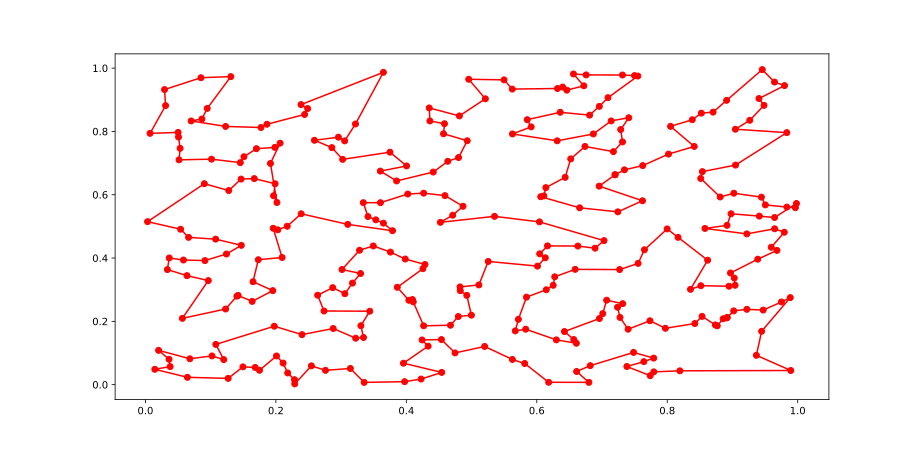
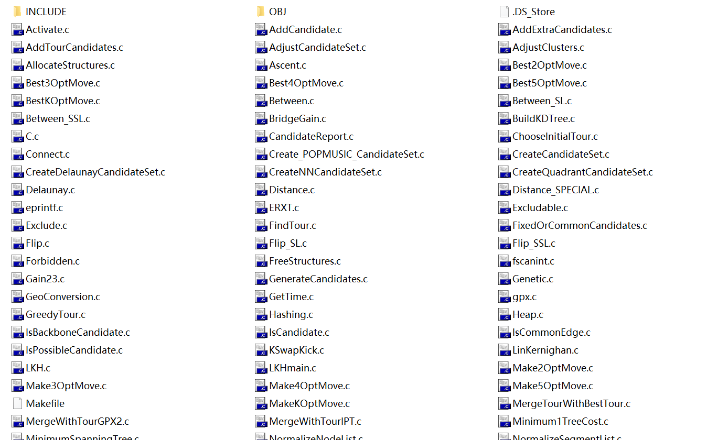
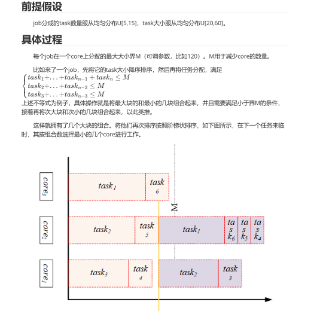
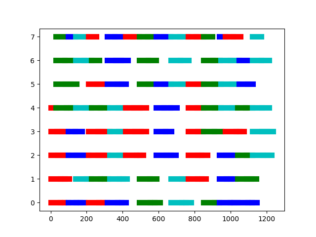
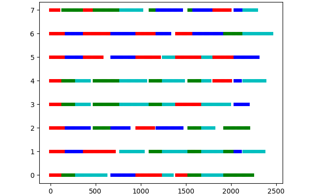

https://github.com/guofei9987/scikit-opt
install with pypi: pip install scikit-opt
一个封装了7种启发式算法的 Python 代码库
（差分进化算法、遗传算法、粒子群算法、模拟退火算法、蚁群算法、鱼群算法、免疫优化算法）
通过阅读文档了解了该库全部算法的 api 使用方法
通过阅读源码了解了 遗传算法 和 模拟退火算法 的具体实现方法
https://github.com/HellOwhatAs/Simulated-Annealing
在了解模拟退火算法后，用 C++ 实现的求解类 _SA
受 scikit-opt 的 user defined function 启发，提供了更新解 x 的用户自定义函数，并提供了 TSP_new_x 可以直接用于求解 TSP 问题。
并通过 pybind11 将调用接口提供给 python
https://github.com/HellOwhatAs/DP-TSP
通过使用 long long int 中的 64 位 0/1 来表示该城市是否已经访问过了。
因此理论上最多只能求解 64 个城市的 TSP 问题。
但实际上在我的电脑上（内存16G）最多只能求解 27 个 城市的问题，求解更多的城市会导致内存耗尽引发异常：MemoryError: bad allocation
template<class Tuple, size_t N> struct PrintTuple { static void Printf(const Tuple& Value, ostream& os) { PrintTuple<Tuple, N - 1>::Printf(Value, os); os << get<N - 1>(Value) << ", "; } }; template<class Tuple> struct PrintTuple<Tuple, 1> { static void Printf(const Tuple& Value, ostream& os) { os << get<0>(Value) << ", "; } }; template<class... Args> void PrintfMyTuple(const tuple<Args...>& vlaue, ostream& os) { PrintTuple<decltype(vlaue), sizeof...(Args)>::Printf(vlaue, os); } template<class ...T1> ostream& operator<<(ostream& os, const tuple<T1...>& x) { os << "("; PrintfMyTuple(x, os); os << ")"; return os; }
https://github.com/fikisipi/elkai
install with pypi: pip install elkai
elkai 是一个 使用 LKH（近似）算法求解 TSP 问题的 python 库
需要特殊说明的一点是，它的求解部分并不是 python 实现的，而是 C 实现的
elkai 库的作者做的工作是使用 CPython 的 C 接口将 Keld Helsgaun 发布的 LKH 算法的 C 代码 编译成了 python 拓展
Instances with known solutions, which are up to N=315 cities, can be solved optimally.
如下是使用 elkai 求解 300 个城市的 TSP 问题的代码
import elkai import numpy as np from scipy import spatial import matplotlib.pyplot as plt num_points = 300 points_coordinate = np.random.rand(num_points, 2) distance_matrix = spatial.distance.cdist(points_coordinate, points_coordinate, metric='euclidean') best_points=elkai.solve_float_matrix(distance_matrix,20) best_points_ = np.concatenate([best_points, [best_points[0]]]) best_points_coordinate = points_coordinate[best_points_, :] plt.plot(best_points_coordinate[:, 0], best_points_coordinate[:, 1], 'o-r') plt.show()
时间花费约为 22.59 s
结果如下图：

http://akira.ruc.dk/~keld/research/LKH/
在实验室群里发的中山大学的智能优化算法会议里面听说的，用于解决 TSP 问题
在网络上没有找到能看懂的教程，也找不到实现代码
所有的来源好像都是 Keld Helsgaun 发布在其网页上的
本来想研究以下他给出的 C 的代码，但是下载之后发现有亿点多

*.c 源代码有上百个，就放弃了
为了了解 LKH 算法得到的结果和最优解之间的差距，我了解了 gurobi 提供的 TSP 例子
其建立的模型是常规的 0/1 规划模型，每个变量的含义是该条边取或不取，通过限制边上的权重最低来得到最优解
(但是它消除子回路的方式我并没有能够完全理解)
它是通过调用 回调函数 subtourelim 的方式来动态添加消除子回路的限制的
import sys,math,random from itertools import combinations import gurobipy as gp from gurobipy import GRB def subtourelim(model, where): if where == GRB.Callback.MIPSOL: vals = model.cbGetSolution(model._vars) tour = subtour(vals) if len(tour) < n: model.cbLazy(gp.quicksum(model._vars[i, j] for i, j in combinations(tour, 2)) <= len(tour)-1) def subtour(vals): edges = gp.tuplelist((i, j) for i, j in vals.keys() if vals[i, j] > 0.5) unvisited = list(range(n)) cycle = range(n+1) # initial length has 1 more city while unvisited: # true if list is non-empty thiscycle = [] neighbors = unvisited while neighbors: current = neighbors[0] thiscycle.append(current) unvisited.remove(current) neighbors = [j for i, j in edges.select(current, '*') if j in unvisited] if len(cycle) > len(thiscycle): cycle = thiscycle return cycle n=300 random.seed(1) points = [(random.randint(0, 100), random.randint(0, 100)) for i in range(n)] dist = {(i, j): math.sqrt(sum((points[i][k]-points[j][k])**2 for k in range(2))) for i in range(n) for j in range(i)} m = gp.Model() vars = m.addVars(dist.keys(), obj=dist, vtype=GRB.BINARY, name='e') for i, j in vars.keys(): vars[j, i] = vars[i, j] # edge in opposite direction m.addConstrs(vars.sum(i, '*') == 2 for i in range(n)) m._vars = vars m.Params.LazyConstraints = 1 m.optimize(subtourelim) vals = m.getAttr('X', vars) tour = subtour(vals) assert len(tour) == n print('Optimal tour: %s' % str(tour)) print('Optimal cost: %g' % m.ObjVal)
同样是 300 个城市的问题，gurobi 的这个模型花费了 112.95 s， 感觉时间很短
得到的却是最优解，非常的不可思议
但是我看不出为什么
https://docs.python.org/3.8/library/ctypes.html
ctypes 是 python 的一个标准库，提供了在 python 代码端调用 C 代码编译出的动态链接库的方法
但是比较复杂，数组的支持也比较繁琐
（而且 C 生成 dll 也比较麻烦）
而且难以支持 C++
因此我简单尝试后放弃了（毕竟有 pybind11）
https://github.com/pybind/pybind11
生成 python 的 C++ 拓展库，也可以在 C++ 端调用 python 解释器（这个没人用吧）
非常的好用
有一点注意，据说 python 和 C++ 相互调用函数的开销比较大（至少比 Cython 大）因此适合开销比较大的 C++ 函数调用，而不是运行时间小却需要经常调用的函数（正好把计算密集型任务从 python 换到 C++）
这里记录一下在 Visual Studio 2019 下的项目配置
以下操作都从项目属性页开始
.pydD:\Python3.8.10\Lib\site-packages\pybind11\include 和 D:\Python3.8.10\includeD:\Python3.8.10\libsD:\Python3.8.10\libs\python38.lib生成：
生成 - 生成解决方案
https://github.com/shiwanghua/SharedFiles/tree/Project-CodeDemo
经过学长们决定我们的大创项目在这个问题的基础上修改一些作为项目背景，要做在线的方法
项目的说明在这里（convert with pdf2htmlEX）
由从坤提出、陈荣鹏总结

由薛家奇和陈荣鹏完成程序编写
#include <iostream> #include <vector> #include <queue> #include <random> #include <algorithm> #include <time.h> using namespace std; default_random_engine rande(time(NULL)); int M = 120, core_num = 8; vector<int> all_cores(core_num,0); vector<int> generate_one_job() { int task_num = uniform_int_distribution<int>(5, 15)(rande); uniform_int_distribution<int> rand_tasksize(20, 60); vector<int> ret; for (int i = 0; i < task_num; ++i)ret.push_back(rand_tasksize(rande)); return ret; } vector<vector<int>> schedule(vector<int> a_job,int color,int offset=1) { vector<int>& cores = all_cores; auto copy_of_a_job = a_job; vector<vector<int>> ret; sort(copy_of_a_job.begin(), copy_of_a_job.end()); deque<int> sorted_tasks(copy_of_a_job.begin(), copy_of_a_job.end()); vector<vector<int>> tmp; while (!sorted_tasks.empty()) { int size_sum = sorted_tasks.back(); tmp.push_back({size_sum}); sorted_tasks.pop_back(); while (!sorted_tasks.empty() && size_sum+ sorted_tasks.front() < M*offset ) { int _ = sorted_tasks.front(); sorted_tasks.pop_front(); size_sum += _; tmp[tmp.size() - 1].push_back(_); } } if (tmp.size() > core_num) { return schedule(copy_of_a_job, color, offset*2); } auto copy_cores = cores; sort(copy_cores.begin(), copy_cores.end()); int line = copy_cores[tmp.size() - 1]; int index = 0; for (auto& i : tmp) { while (cores[index] > line)++index; cores[index] = line; for (auto j : i){ int tmp1 = cores[index]; cores[index] += j; ret.push_back({ index ,tmp1 ,cores[index] ,color }); } ++index; } return ret; } int main() { for (int i = 0; i < 20; ++i) { schedule(generate_one_job(),i); for (auto i : all_cores)cout << i << '\t'; cout << '\n'; } return 0; }
以下是20个job的任务分配情况图：

将任务分配抽象为一般函数的整数规划问题，并通过 scikit-opt 的遗传算法（GA）求解。
代码如下：
rand_data.py:
import numpy as np njob=20 nblock=np.random.randint(10,20,njob) datasize=np.random.randint(10,100,(njob,np.max(nblock))) nhost=1 # ncore=np.random.randint(4,12,nhost) ncore=[8]
vis.py:
import matplotlib.pyplot as plt cnames = ["r","g","b","c"] _ion = False def ion(): global _ion _ion = True plt.ion() def ioff(): global _ion _ion = False plt.ioff() def visualize(data): colortable = [cnames[i % len(cnames)] for i in range(data[-1][0] + 1)] max_y = max(i[2] for i in data) for i in data: plt.plot([i[3]+0.1, i[4]-0.1], [i[2], i[2]], color=colortable[i[0]], linewidth=5.) if _ion: plt.pause(1e-5) plt.cla() else: plt.show()
main.py:
from sko.GA import GA import numpy as np from numba import njit import rand_data as di import vis vis.ion() all_cores=np.zeros( np.sum(di.ncore), np.float64 ) data=[] @njit def _max_end(x:np.ndarray,all_cores:np.ndarray): x=(x+0.5).astype(np.int64) tmp=all_cores.copy() recent_max=-1. ret=0 mean_val=np.mean(all_cores) for c in x:recent_max=max(recent_max,all_cores[c]) for c in x:tmp[c]=recent_max for b,c in enumerate(x): _=all_cores[c]-mean_val if _>0: ret+=1000*_ tmp[c]+=di.datasize[j][b] ret+=np.max(tmp)-np.min(all_cores) return ret def max_end(x:np.ndarray): return _max_end(x,all_cores) def update_all_cores(x:np.ndarray): x=(x+0.5).astype(np.int64) tmp=all_cores.copy() recent_max=-1. for c in x:recent_max=max(recent_max,all_cores[c]) for c in x:tmp[c]=recent_max for b,c in enumerate(x): tmp_list=[j,b,c,tmp[c]] tmp[c]+=di.datasize[j][b] tmp_list.append(tmp[c]) data.append(tmp_list) return tmp for j in range(di.njob): print("Job {}:".format(j)) ga=GA( func=max_end, n_dim=di.nblock[j], lb=0, ub=all_cores.shape[0]-1, precision=1, max_iter=500 ) ga.run() print(ga.best_x,ga.best_y) all_cores=update_all_cores(ga.best_x) print(all_cores) vis.visualize(data) print("done !") vis.ioff() vis.visualize(data)
以下是20个job的任务分配情况图：

https://github.com/microsoft/
vcpkg 是 C++ 的库管理器，能够通过 vcpkg install XXX 的命令安装第三方库
可以通过 vcpkg integrate install 将安装的库在 Visual Studio 中使用
所有已安装的库均可立即使用
#include包含您需使用的库的头文件且无需额外配置。
（有点像 pip 了）
http://ceres-solver.org/
用于求解最小二乘问题的C++模块，用 vcpkg install ceres 安装
有点复杂，且没有应用场景，就放弃了
http://eigen.tuxfamily.org/
C++ 的矩阵库，同时也是很多库的依赖项（如 ceres）
含有很多的线性代数工具，但是暂时没有应用场景，就没有实际使用
只用了基础的矩阵类
以下是 动态规划解TSP 的使用 Eigen 矩阵类的实现：
#include <pybind11/pybind11.h> #include <pybind11/stl.h> #include <pybind11/eigen.h> #define Vin(V,i) ((bool)((static_cast<unsigned __int64>(1)<<(i-1))&V)) #define Vpop(V,i) (V&(~(static_cast<unsigned __int64>(1)<<(i-1)))) #define Vput(V,i) (V|(static_cast<unsigned __int64>(1)<<(i-1))) using namespace std; namespace py = pybind11; int n; Eigen::Ref<Eigen::Matrix<double, Eigen::Dynamic, Eigen::Dynamic, Eigen::RowMajor>>* x; Eigen::Matrix<double, Eigen::Dynamic, Eigen::Dynamic, Eigen::RowMajor> dp; Eigen::Matrix<int, Eigen::Dynamic, Eigen::Dynamic, Eigen::RowMajor> route; double d(int i, long long int V) { if (!V) { dp(i,V) = (*x)(i,0); route(i,V) = 0; return (*x)(i,0); } if (dp(i,V) >= 0) { return dp(i,V); } double recent_min = DBL_MAX, tmp; int chosen_k = -1; for (int k = 0; k < n; ++k) { if (Vin(V, k)) { tmp = (*x)(i,k) + d(k, Vpop(V, k)); if (tmp < recent_min) { recent_min = tmp; chosen_k = k; } } } dp(i,V) = recent_min; route(i, V) = chosen_k; return recent_min; } #define RM(type) Eigen::Matrix<type, Eigen::Dynamic, Eigen::Dynamic, Eigen::RowMajor> vector<int> solve(Eigen::Ref<RM(double)> _x) { n = _x.rows(); x = &_x; if (n > 64) throw py::value_error("Error: num of points too large causing long long int overflow."); long long int tmp = static_cast < unsigned __int64>(1) << (n - 1); dp = RM(double)::Constant(n, tmp, -1); route = RM(int)::Constant(n, tmp, -1); int start = 0; long long V = (static_cast<unsigned __int64>(1) << (n - 1)) - 1; double dret = d(start, V); vector<int> ret; ret.push_back(start); start = route(start,V); V = Vpop(V, start); while (start) { ret.push_back(start); start = route(start, V); V = Vpop(V, start); } return ret; } PYBIND11_MODULE(dp_tsp, m) { m.def("solve", &solve, py::arg("distance_matrix")); }
从代码的角度来看确实可以减少代码的书写，但是从效率的方面来看，使用 Eigen 的代码要慢一点
而且是否调用内置函数是值得讨论的，我曾经用 C++ 重写一个 python opencv 的程序，但是 C++ 的实现竟然要比 python opencv 的实现还要慢。后来发现是一个子矩阵的求和处，我调用了 Eigen 的子矩阵切片然后再 sum 求和，而这样远慢于直接遍历求和（未探究为什么）
修改后的 C++ 代码终于比 python opencv 快一些了
因此，是否使用以及在哪里使用 Eigen 矩阵是一个需要考虑的问题
Eigen 的 Matrix 和 numpy 的 ndarray 可以通过 pybind 在 python 与 C++ 函数之间进行引用传递。
需要注意 numpy 矩阵默认行优先而 Eigen 矩阵默认列优先。
可以通过 Eigen::Matrix<double, Eigen::Dynamic, Eigen::Dynamic, Eigen::RowMajor> 在 Eigen 中定义行优先的矩阵从而解决上述问题。
一个实例如下：
C++:
#include<pybind11/pybind11> #include<pybind11/eigen.h> namespace py=pybind11; using RowMatrixXd = Eigen::Matrix<double, Eigen::Dynamic,Eigen::Dynamic, Eigen::RowMajor>; PYBIND11_MODULE(name,m){ m.def("scale", [](Eigen::Ref<RowMatrixXd>&m, double c) { m *= c; }); }
Python:
from name import scale import numpy as np a=np.ones((5,5)) print(a) scale(a,3) print(a)
输出如下：
[[1. 1. 1. 1. 1.] [1. 1. 1. 1. 1.] [1. 1. 1. 1. 1.] [1. 1. 1. 1. 1.] [1. 1. 1. 1. 1.]] [[3. 3. 3. 3. 3.] [3. 3. 3. 3. 3.] [3. 3. 3. 3. 3.] [3. 3. 3. 3. 3.] [3. 3. 3. 3. 3.]]
可以看出 numpy 矩阵 a 确实是引用传递给了 scale 函数，并在其中被乘了 3 倍